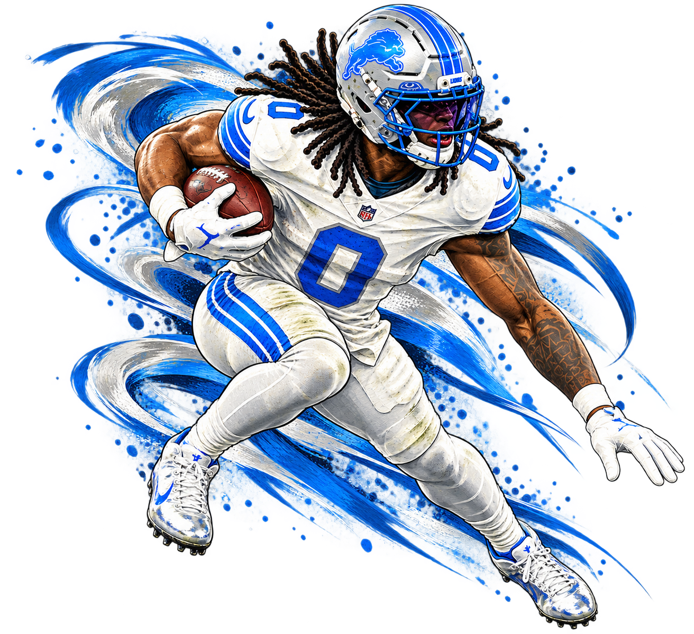

Jahmyr Gibbs · Detroit Lions · #0
Chasing 31
He scores. You get a text. ↘
Loading ESPN data…
TOUCHDOWNS IN 2026
—
— rushing— receiving— other

— of 31 TDsCurrent Record: LaDainian Tomlinson · 31 TDs · 2006 · 16 games
Previous Record: LaDainian Tomlinson · 31 TDs · 2006 · 16 games17-game pace
—
— games remaining
to break
—
Touchdowns needed
Games played
—
Gibbs appearances / 17
Career TDs
—
Regular season
Every game. Every score.
2026 game log| Date | Opponent | Rush TD | Rec TD | Total TD |
|---|---|---|---|---|
| Loading game boxscores… | ||||
The road to 31
● Gibbs┄ 31-TD pace over 17 games
Loading pace chart…
Projection uses Gibbs' appearances. The chart uses completed Lions games; bye weeks and playoffs are excluded.
Tomlinson set the record in 16 games. Gibbs has a 17-game season.
NFL touchdown leaders
2026 NFL
- Loading touchdown leaders…
Total touchdowns scored, excluding passing TDs. ESPN data · Regular season only · Updates every 5 minutes.